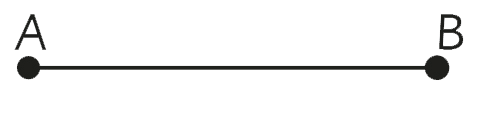
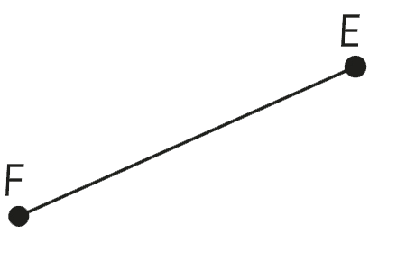
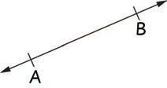
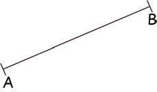
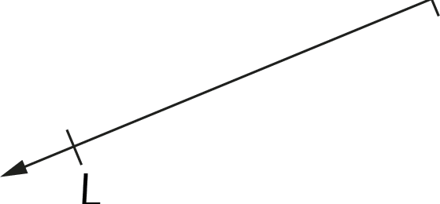

4.In which task, the following lines were constructed?


Features of a line segment:
A line segment has the following features:
- (a) It is straight.
- (b) It has no thickness.
- (c) It has two endpoints.
Example 1
In each of the following diagrams, find out if it is a line segment, a line or not.
(a)

(b)

(c)

Answer
(a) Is a line because it has no end points.
(b) Is a line segment because it has two end points.
(c) Is neither a line nor a line segment because it has one starting point and an arrow on the other end.